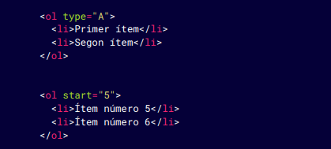
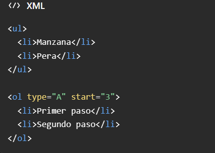
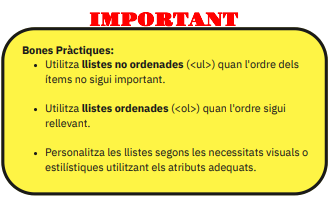

En HTML hay dos tipos de listas. Usamos <'ul> cuando el orden de los elementos no importa; el navegador los muestra con viñetas. Usamos <'ol> cuando el orden sí importa; el navegador los numera. En los dos casos, cada elemento de la lista se escribe dentro de <'li>.

En una lista ordenada, el atributo type permite cambiar la numeración: por ejemplo, a letras (A, a) o números romanos (I, i). El atributo 'start' permite elegir por qué número empieza la lista.
En una lista numerada de HTML (<'ol>):

